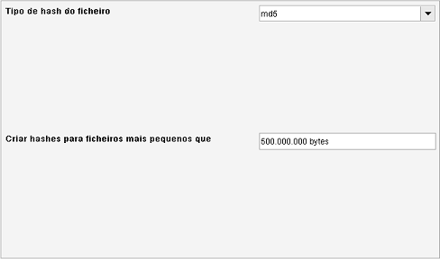

Hashing de ficheiros
Caminho de menu: Definições > Definições > Hashing de ficheiros

O Data Crow cria hashes para ficheiros para os poder identificar corretamente.
O Gestor de unidades é uma das ferramentas que usa o hash dos ficheiros para os encontrar.
Tipo de hash dos ficheiros
Selecione o algoritmo de hash. Isto é realmente uma questão de gosto. Qualquer um serve.
Criar hash para ficheiros menores que
Por razões de performance, o Data Crow só cria hashes para ficheiros menores que um certo tamanho.
Aqui pode afinar esta definição. Definir este valor para 0, ou deixando-o em branco, vai permitir analisar ficheiros
de qualquer tamanho.